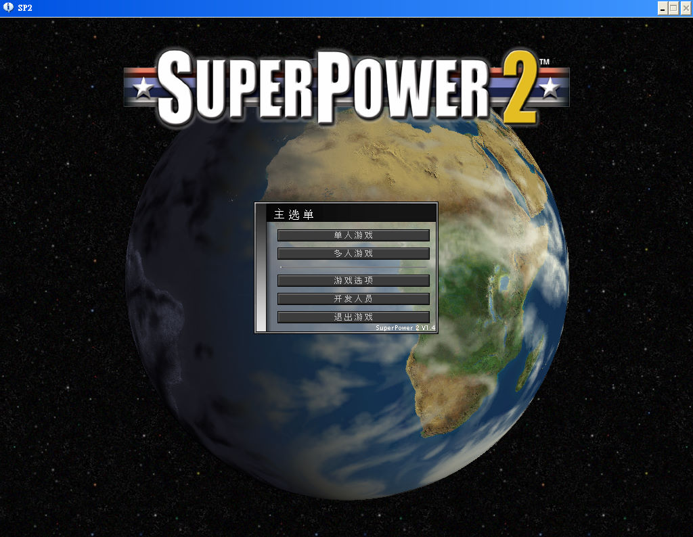
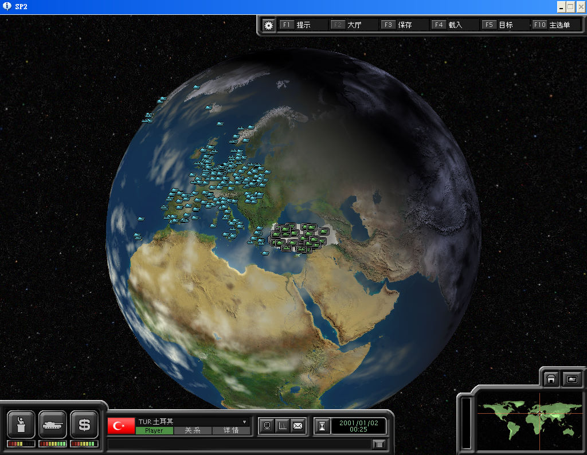

名稱：超級力量2／超級大國2 (Super Power 2／SuperPower 2，簡中版) 簡介：GolemLabs 2004年出品的政治模擬即時戰略遊戲，由DreamCatcher代理發行 [待補]。   備註：本版為2005年簡中漢化1.4版 保護：不明 檔案：setup_superpower_2_1.5.2_(22667).rar = GOG英文1.5.2安裝檔 chs14.rar = 1.4簡中漢化檔

